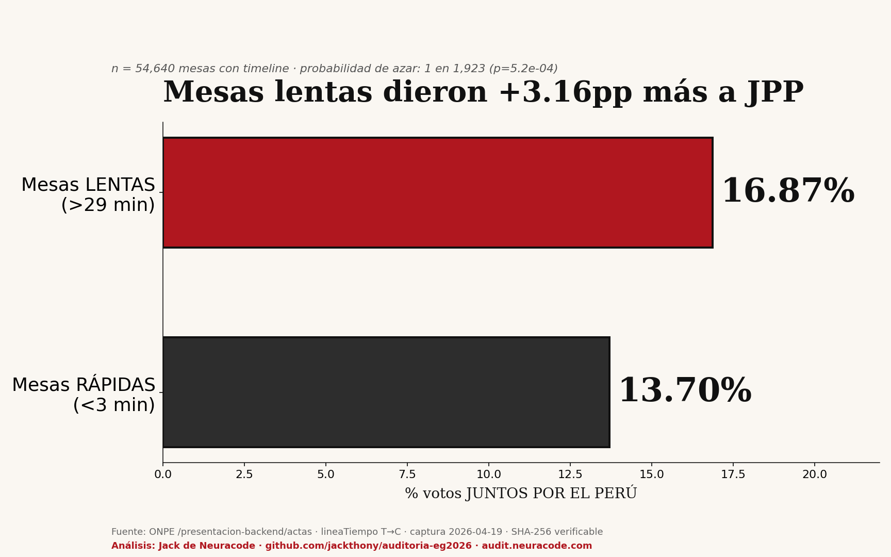

Comparamos 54,640 mesas: las que tardaron más de 29 minutos entre digitalización y contabilización dieron +3.16 puntos porcentuales más al partido Juntos por el Perú que las mesas rápidas. No es casualidad.

Cada mesa ONPE deja tres sellos de tiempo: T (digitalización del acta), D (digitación de votos) y C (contabilización oficial). Calculamos el gap T→C para cada mesa capturada.
| Mesa | Departamento | Tiempo T→C | JPP% |
|---|---|---|---|
| 044737 | Lima | 84.3 h | 2.86% |
| 066489 | Loreto | 67.3 h | 50.59% |
| 066568 | Loreto | 63.7 h | 49.55% |
| 058913 | Lima | 55.2 h | 5.43% |
| 066481 | Loreto | 48.9 h | 47.21% |
Mesa 044737: tardó 3 días y medio entre digitalizar el acta y contabilizar los votos.
Todo el código y la data están publicados. Cualquier estadístico puede verificarlo: